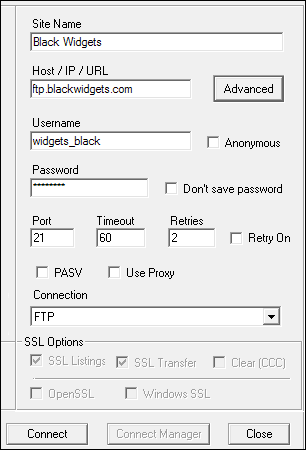
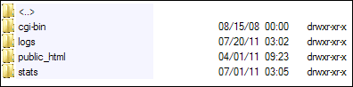

What to look for when buying Web Space
Disk Space
This is how much space you get on the hosting company's server. Obviously, the
more the merrier, here. But it's highly unlikely that you'll need a Gigabyte
of disk space, unless your web site contains lots of large images or videos.
But the average site won't even be 50 megabyte in size never mind 500 megabytes.
So don't just base your decision on Disk Space.
Data Transfer
This refers to how much download activity occurs on your site each month. (Data
Transfer is also known as Bandwidth.) Say, for example, that each page on your
site is 10 kilobytes in size (pretty small, these days). If 1000 visitors come
to your site each day they will be downloading 10, 000 kilobytes of data, or
10 megabytes. Multiply that by the number of days in a month and the data transfer
will be about 300 megabytes a month. If the Web Hosting company you sign up
for only allows 100 megabytes of traffic each month then they will cut you off
when that limit is reached. Your site will then be down until next month.
It's a pretty rare Web Hosting company that does this, though. And a 100 megabytes data transfer limit is fairly puny. What you'll normally see here is the dreaded word "unlimited". A lot of hosts put an asterisk next to "unlimited" which leads to a fair use policy. Which, of course, means it's not really unlimited. Your site would really need to take off, though, for the fair use policy to kick in. But pay attention to when this is.
Resellers
Not every hosting company has their own servers. Some will rent server space
from another company. They will then resell some server space to you. So when
you sign up for a reseller just remember that they don't own their own servers.
If something goes wrong they will have to get in touch with the parent company
and find out what's going on, and how long it will take to fix the problem.
In the meantime, your site will be down. There's not much the reseller can do
about it, though, other than to nag their parent company.
Most resellers are decent small businesses, who will go out of their way to help you. In fact, one of the advantages of a reseller is that personal touch you just don't get with "big boys" of the web hosting business.
So don't be afraid of signing up with a reseller, especially the ones that are up-front about it. But be wary of those resellers who hide the fact in the small print, and whose contact details are minimal or absent. A good trick is to try to phone up your prospective hosting company just to find out how fast they answer. If they only do email support don't be put off, as telephone support is quite expensive. But do check to see how fast you get a response to a sign-up query.
Linux, Windows, Apache, IIS
The server software that a hosting company runs is usually Apache. This will
be running on a Linux operating system. IIS stands for Internet Information
Services and is server software by Microsoft running on Windows. If you want
an ASP NET web site then you'll need to go with IIS/Windows. However, most hosting
companies will offer the cheaper Linux/Apache solution rather than IIS/Windows.
(You can run PHP scripts on both Windows and Linux servers.)
If you don't really care about any of this then go for the Linux/Apache solution.
mySQL database
If you need to store information in a database then on Linux hosting this is
called mySQL, which is a database owned by Sun, just like the Access database
is owned by Microsoft. You'll normally only get 1 mySQL database. Hosting companies
that have their own servers, however, usually offer you more.
Email
It's very handy to be able to send and receive email with your own domain name.
For our example domain name, it would be handy of we could contact our customers
using orders@blackwidgets.com rather than, say, orders@gmail.com. Most Hosting
companies offer POP3 or IMAP email. These are ways to receive email. If you
want to be able to send email with your domain name then look out for SMTP.
This would mean that the emails will be going through their servers, rather
than your ISP's servers. What this means is that if you are not reliant on your
Internet Service Provider to forward emails, if indeed they would let you.
If being able to send as well as receive emails with your domain name is important then don't forget to ask about both. Resellers tend to let you receive but not send, so POP3 but not SMTP.
Templates
If you haven't got the time to create a web site, then some Web Hosting companies
let you use their in-built templates to create a site. This will be via a simple
wizard system. Other templates to look out for are WordPress, if you're going
to be blogging, and Joomla, if you need a Content Management System.
cPanel login
cPanel is a piece of server software that handles the administration side of
things, such as setting up email accounts, managing databases, checking diskspace,
and a whole lot more besides. If you sign up for a reseller you'll more than
likely have a cPanel login.
SSL
SSL stands for Secure Socket Layer. It's a way to encrypt connections between
a server and a client. If you need files to be securely transferred and not
just available to everyone then look out for a SSL option. You may also need
SSL if you have an area on your site where people need to log in. You can tell
if SSL is being used because the address in the address bar of your browser
will say https://www.blackwidgets.com and not just http://www.blackwidgets.com
(the difference is the "s" after "http").
FTP
FTP stands for File Transfer Protocol. This is used to transfer the files and
web pages from your computer to your web space. You can get FTP software that
simplifies the job. You enter the details provided by your web hosting company
and then connect. After that it will be a matter of dragging and dropping files
from your computer to theirs. Here's an example of setting up your FTP software:

For the Host/IP/URL section this is usually your domain name with FTP in front of it. But your Web Hosting company will send you an email with these details. When you click Connect the software will attempt to log in using your username and password. If you're successful, you'll see folders like these for Linux hosting:

Double-click the public_html folder and uploaded all your web pages into there. Windows hosting will be very similar but may just say public instead of public_html.
Some Web Hosts
If you're in the UK then the big players in Web Hosting business are www.123-reg.co.uk and www.fasthosts.co.uk. 123-reg is owned by Webfusion, which has its own hosting here: www.webfusion.co.uk/web-hosting/.
All three of these sites are worth a visit. Look out for all the items we've discussed above, and make note of what other extras they offer. Most of these extras you won't need, so don't be bamboozled by them!
Another Web Hosting company to consider is Netweaver (www.netweaver.co.uk).
Although they don't offer as many frills as the big players, they are very reliable.
They have their own servers, too.
In the next part, we'll take a look at Search Engine Optimisation.